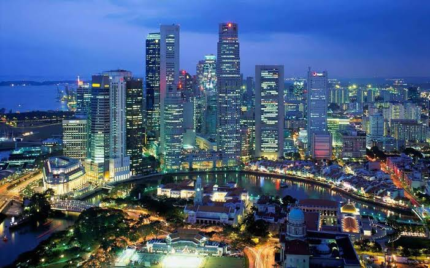

سنغافورة
تعد واحدة من اكثر المدن تقدما من حيث التكنولوجيا و التخطيط الحضري

نظام النقل الجديد
سنغافورة تتمتع بنظام للنقل العام يعمل بفعالية عالية ويساعد على تجنب الازدحام المروري.

التجميل والتصميم الحضري
مدينة جميلة ومصممة بعناية وتوفر العديد من الفرص للاستمتاع بالمناظر الطبيعية والمعمار.

الحدائق العمودية
تعتبر الحدائق العمودية مثالًا رائعًا على التوازن بين التكنولوجيا والطبيعة في سنغافورة.